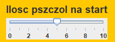
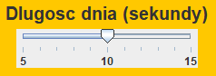
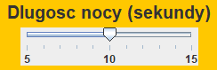
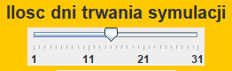
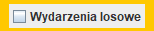
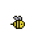
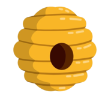

Symulator pszczół - instrukcja
Głowne założenia i cele symulacji
Celem symulacji jest ukazanie życia pszczół w hodowli ludzkiej. Pszczoły każdego dnia wylatują z ula w celu pozyskania nektaru z kwiatka. Pozyskany nektar musi zostać przetransportowany do ula, tylko wtedy pszczoła może poszukać kolejnego kwiatka. Oczywiście każda pszczoła posiada maksymalny udźwig, tak samo jak każdy kwiat posiada określoną ilość nektaru. Pszczoły to owady dzienne, w związku z tym w nocy odpoczywają. To właśnie o tej porze dnia mogą się rozmnożyć i obiązkowo zjeść nektar, w przeciwnym razie zdechną. Życie pszczół jest urozmaicone poprzez wydarzenia losowe, pozytywne, jak i zarówno negatywne. Na szczęście nie są skazane na samotność. Jesteś tutaj by im pomóc przeyż w godnych warunkach bez obawy o głód albo zamienić ich dotychczasowe życie w biznes. Wybór zależy od Ciebie!
Ustawienia
|  | Ilość pszczół na start. Mimo iż jest do wyboru 0, nie da się tego zrobić |
|  | Czas trawania dnia w sekundach. W trakcie dnia pszczoły zbierają netkar z kwiatków |
|  | Czas trwania nocy w sekundach. W trakcie nocy pszczoły odpoczywają, jedzą, rozmnażają się. Również wtedy można wykonać akcję, np. kupić pszczołe, czy kwiatek. Dodatkowa istnieje możliwość zajścia wydarzenia losowego |
|  | Ile ma trwać symulacja |
|  | Czy chcesz aby twoją symulację urozmaiciły wydarzenia losowe? |
| Wybierz kto ma sterować. 1 - Ty, 2- Bot Peter, 3 - Bot Bruno. Chodzą pogłoski, że mogą być do kogoś podobni |
Elementy na mapie
|  | Pszczoła |
| Kwiat z nektarem | |
| Kwiat bez nektaru | |
|  | Ul |
Sposoby przeprowadzenia symulacji
Jak już wiesz, istnieją 3 opcje wyboru sterowania. Pierwsza zakłada, że to własnie Ty staniesz za sterami koncernu pszczelego. Będziesz musiał mądrze zarządzać ilościa pszczoł i kwiatków, które to będziesz mógł kupić na rynku. Pieniądze będziesz pozyskiwał ze sprzedaży nektaru zgromadzonego przez pszczoły. Pamiętaj by nie kupywać za dużo pszczoł, bez wcześniejszego zakupu kwiatków, gdyż mogą szybko umrzeć z głodu, a tego przcież byśmy nie chcieli.
Druga opcja to Bot Peter. Ta istota nie zna umiaru w inwestycjach, co ciekawe szczególnie lubi inwestować w pszczoły. Bardzo mało oszczędza i lubi sprzedawać wiele nektaru. Chodzą pogłoski, że matematyka to nie jest jeko mocna strona, dlatego tyle wydaje
Trzecia opcja to Bot Bruno. Zdecydowanie najlepsza opcja dla osób chcących zobaczyć poprawny przebieg programu. Nie inwestuje zbyt dużo, lubi oszczędzać i nie wiadomo czemu lubi kwiatki.
Wydarzenia losowe
Żeby nie było zbyt monotonnie na ratunek przychodzą wydarzenia losowe. Bywają zarówno dobre jak i zarówno złe. Jak to bywa w lesie pojawiają się tylko i wyłącznie w noc. Matematycy powiadają, że szansa na zaistnieje jakiegoś wynosi 20%
Pszczele zachowania
Pszczoły latają do wolnego kwiatka w trakcie dnia. Wybierają sobie konkretny kwiatek i wytrwale do niego zmierzają. Po pobraniu nektaru wracają do ula i jeżeli jakiś kwiatek ma coś w sobie to pszczoła chętnie to zabierze. Jeżeli nie ma już wolnego kwiatka pszczola zacznie latać sobie bez celu
Pszczoła jak każde inne zwierze musi jeść. Nocą spożyw zebrany nektar. W przypadku niewystarczajęcej ilości nektaru umiara.
Pszczoła również nocą sie rozmnaża. Jeżeli ilość nektaru spełnia wymagania może zajść do narodzin nowej pszczoły